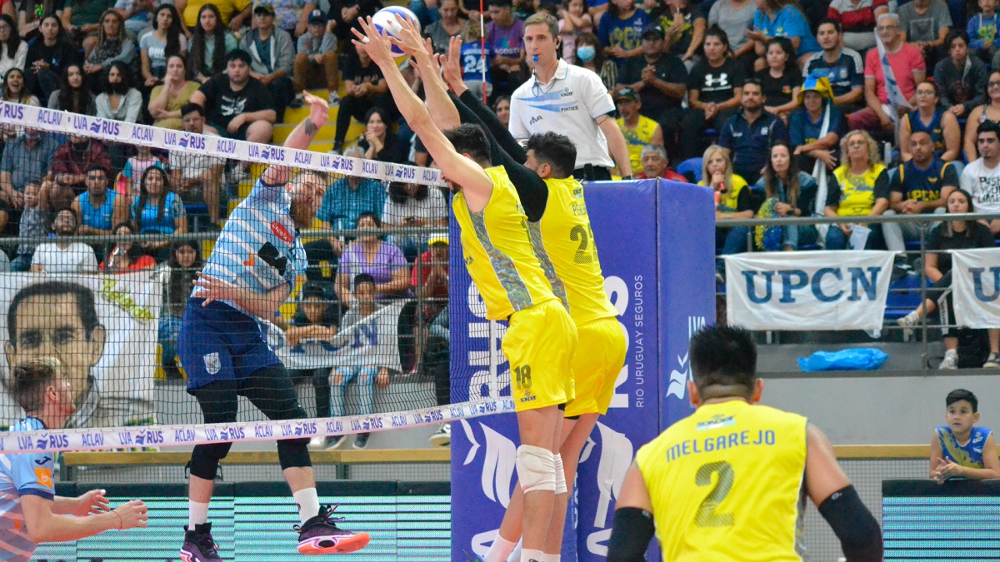

Otra semana de competiciones europeas y participación de varios antillanos con sus clubes. Los partidos de ida de la semifinal, y la derrota del Piacenza ante un equipo francés, así como la actuación de Wilma Salas, resultó lo más destacado del voleibol en la última fecha.
El Piacenza de la Superliga italiana visitaba Francia para enfrentar, como parte de los cuartos de final de la CEV Cup, a uno de los mejores equipos de esa liga, el Montpellier. Sin embargo, el favoritismo inclinaba la balanza a su favor, debido al gran número de estrellas en su plantilla.
Lo cierto es que cayeron derrotados 3×1, y tendrán ahora que ir a por la remontada en Italia y barrer en tres sets, o vencerles con igual marcador e ir a un Golden set.
Este fin de semana, de viernes a domingo, la ciudad de Monteros en la provincia de Tucumán será sede del Tour 6 de la Liga de Vóleibol Argentina. Los partidos se jugarán en el Polideportivo Municipal “Prof. José Nicolás Russo” con la presencia de los doce equipos que participan, entre ellos, los sanjuaninos UPCN, Obras y UVT.